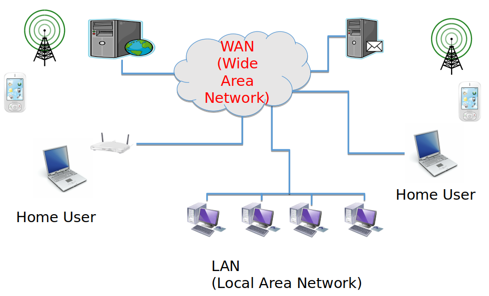

The Internet is a world-wide network of devices. It comprises the hardware (devices, connected either continuously or intermittently; communication equipment; communication channels, wired and wireless) and the software (for routing, sending, receiving etc.) involved in realising this network.
The word Internet is spelt with a capital 'I' as it is a proper name, denoting the particular world-wide network universally used for connecting devices and people.
The Internet is used as the infrastructure upon which higher level applications are built. The most commonly used of these applications is the World Wide Web.
The World Wide Web
The World Wide Web (WWW) is an application that runs on the Internet.
It allows the publication of content (on servers) and its consumption by people and machines (using clients, e.g. browsers).
Internet Technologies
___ ___
| | | |
--| |----| |--
|___| |___|
Internet Technologies
The Internet consists of many interconnected networks, classifable by size and purpose. The most common types in this classification are:
Local Area Network (LAN), connecting devices locally, within an organisation or home.
Wide Area Network (WAN), connecting smaller networks into larger networks and ultimately the entire Internet.
The technologies used for building these networks also differ depending on size and purpose:
 Figure: The Internet (by E. Lee)
Some LAN technologies:
Ethernet - wired connections The wired network connecting the PCs in IT-Tallaght.
WiFi - wireless connections The Eduroam network in IT-Tallaght.
Some WAN technologies:
A WiFi network's fiberoptic and modem connection to the Internet Service Provider (ISP)
4G data technology allowing mobile devices to connect to the Internet
Submarine cables that connect networks in different parts of the world (link to picture)
Communication on the Internet takes place by means of the TCP/IP protocols (regardless of the lower-level communication technology).
IP stands for Internet Protocol and defines the rules for sending bundles of data, called packets, from one point on the network to another, including deciding on a route through the network. The destination and other points on the route are identified using IP addresses.
More about IP addresses
Each end-point on the Internet is associated with an IP address. IP addresses are used as origin, destination and along-the-way points by the IP protocol when delivering packets of information.
The currently used version of IP (IPv4) uses 32-bit addresses, which are represented using four decimal numbers (each between 0 and 255), with dots between them.
The new IP standard (IPv6) uses 128-bit addresses, as the number of end-points on the internet is fast reaching the number that can be addressed with IPv4 (about 4 billion). These addresses are represented using hexadecimal digits.
Within a destination end-point, individual applications are addressed using port numbers. The port number is specified after the IP address.
The standard port numbers of some Internet applications:
HTTP: 80
FTP: 21, 20
SMTP: 25
TCP stands for Transmission Control Protocol. It consists of rules for connection-oriented communication, whereby content is broken down into packets and sent with additional information that ensures its arrival at the destination in the right order and without error. TCP is at a level higher than IP and uses IP for the delivery of packets.
A network can use Internet technologies and not be part of the Internet. When a fault happens that causes your home WiFi router to get disconnected from your Internet Service Provider (ISP), your home network temporarily becomes a network that is based on Internet technologies but is not a part of the Internet.
Internet Applications
___ ___
| |---->| |
--| C | | S |--
|___|<----|___|
Internet Applications
Internet Applications are applications that make use of the Internet as an infrastructure for 'doing something useful'. Internet applications each have their own communication protocol, specifying the rules of communication for the particular application. The main Internet applications today are:
The World Wide Web (WWW) uses the Hypertext Transfer Protocol (HTTP).
Email uses the Simple Mail Transfer Protocol (SMTP).
The Domain Name System (DNS) uses the DNS protocol and is a system for naming end-points on the internet and the translation between these names and IP addresses.
The File Transfer Protocol (FTP) is used for transferring files on the Internet.
Older applications (not in widespread use any more):
News - an application for the distribution of news by means of topical groups.
Gopher - an application for the distribution and retrieval of documents; used menus, rather than hyperlinks, to connect documents
Applications on the Internet broadly follow one of two communication models:
two roles played by participating endpoints: client and server
asymmetrical
all applications listed above use this communication model
peer-to-peer
all participants play the same role of a peer
less used
example: BitTorrent, Solid (Tim Berners Lee MIT project)
World Wide Web Technologies
HTTP
URL
HTML
CSS
Javascript
World Wide Web Technologies
The WWW is built using many technologies, but the most important ones are:
Hypertext Transfer Protocol (HTTP)
Uniform Resource Locator (URL) and Domain Name System (DNS)
More about URLs and DNS
Neither URLs nor the DNS are strictly WWW technologies (if by 'WWW technology' we mean some part of the WWW application), since URLs are used with applications other than the WWW and the DNS is an application in itself. However, they are both an integral part of how the WWW is used.
As IP addresses are not very user friendly (for remembering or typing), URLs are used to 'stand for' IP addresses. They are strings of text that represent resources in a human-understandable manner.
The parts of the URL are:
protocolhttp
subdomain, which typically represents a server www
domain nameit-tallaght.ie, which consists of two parts:
the top-level domain (TLD) or root domain (the name after the dot) ie
the second-level domain (the name before the dot) it-tallaght
path on serverhome
server resourceindex.html
Ownership of domains and other names constituting the URL
IANA administers second-level domains under root domains int and arpa.
For country TLDs (e.g. ie or uk) second-level domains are administered by country organisations (e.g. IE Domain Registry - IEDR in Ireland, where to obtain a domain the applicant must prove they are based in Ireland).
For other TLDs (e.g. com or net) second-level domains can be obtained from and registered with various domain name registrars, including commercial organisations.
Subdomains are managed by the owners of the domain and are often used for individual servers in the domain. These do not need to be registered.
The remainder of the URL, i.e. the path to the resource and the resource itself, are managed by the owners of the domain. In an organisation, administrators or content developers for each server would be given authority to do this.
The subdomain, second-level domain and root domain together make up the fully qualified domain name. It is this fully qualified domain name that is resolved to an IP address by the DNS. Multiple fully qualified domain names can map to the same IP address (virtual hosts).
ICANN is an internationally organised, non-profit corporation with the responsibility for:
Internet Protocol (IP) address space allocation
protocol identifier assignment
generic and country-code top level domain (gTLD and ccTLD) name system management
root server system management
These functions used to be performed by the Internet Assigned Numbers Authority (IANA) and other bodies, under US government contract, but the functions have been transferred to ICANN in 2016
The W3C's mission is to develop protocols and guidelines that will allow the WWW to realise its full potential.
Members are organisations, companies and individuals.
It publishes recommendations that are in fact standards (but not enforceable)
The principles that guide its activities are:
Web for All (expressed through the Web Accessibility Initiative and Internationalisation activities)
Web on Everything (mobile, various browsers and agents, other devices)
A Short History of the Internet and the World Wide Web
:-( ??? :-) !!! t
-+-----+-----+-----+----->
A Short History of the Internet and the World Wide Web
early 1960s
Packet switching
Packet switching theory was developed by Leonard Kleinrock.
This was crucial for enabling computer networks, with intermittent communication, which differs greatly from telephony (where an entire circuit is held for the duration of a conversation).
late 1960s
ARPANet
First computer network was developed Advanced Research Project Agency (ARPA), of the USA Military.